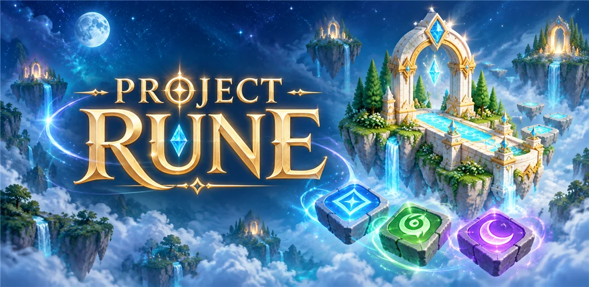
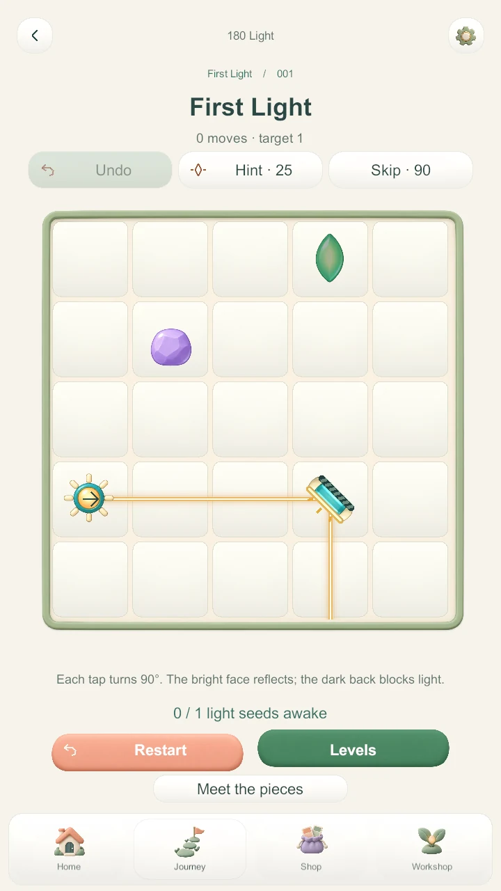
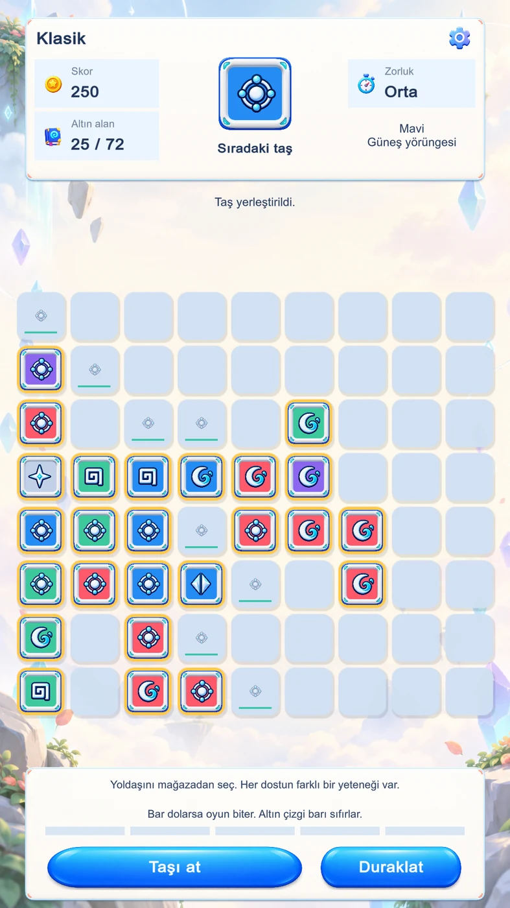
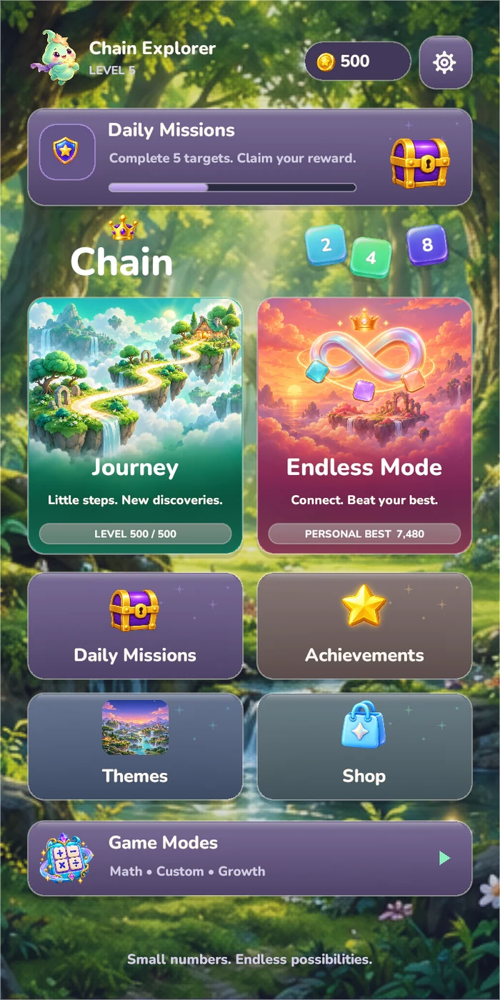
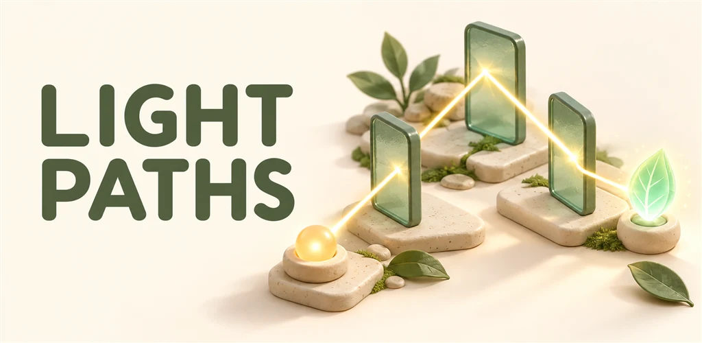
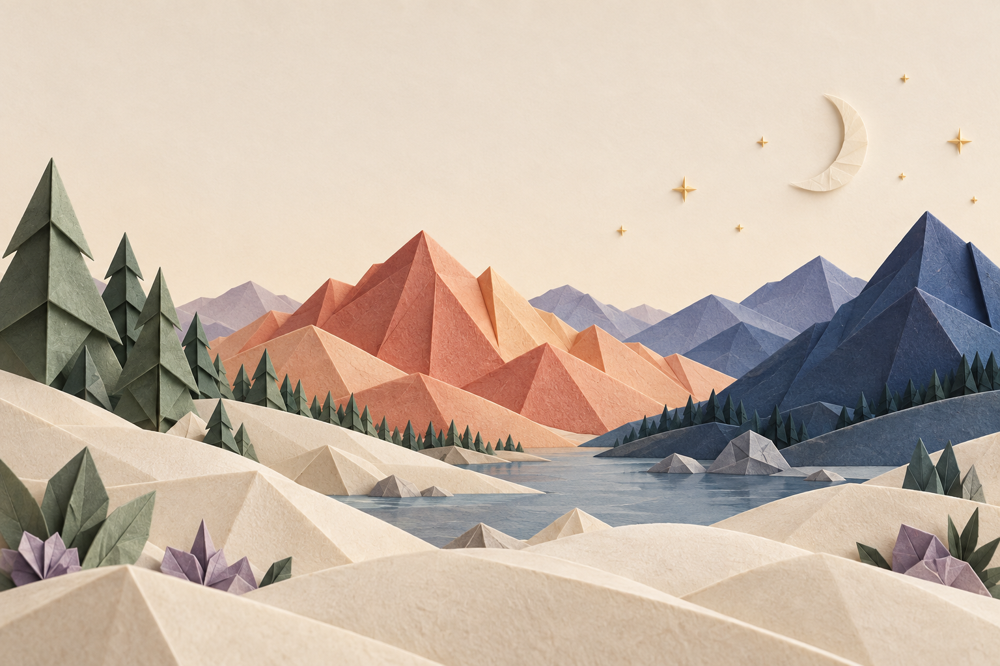
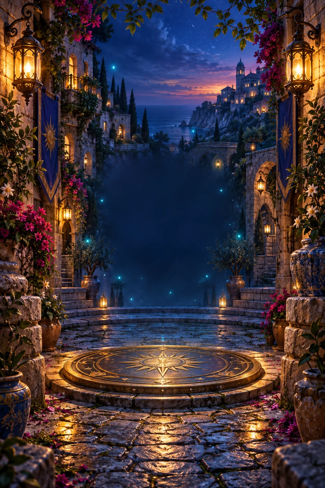
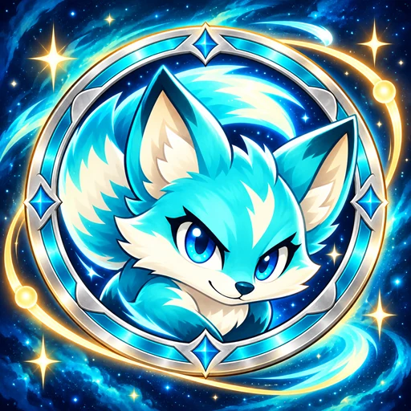
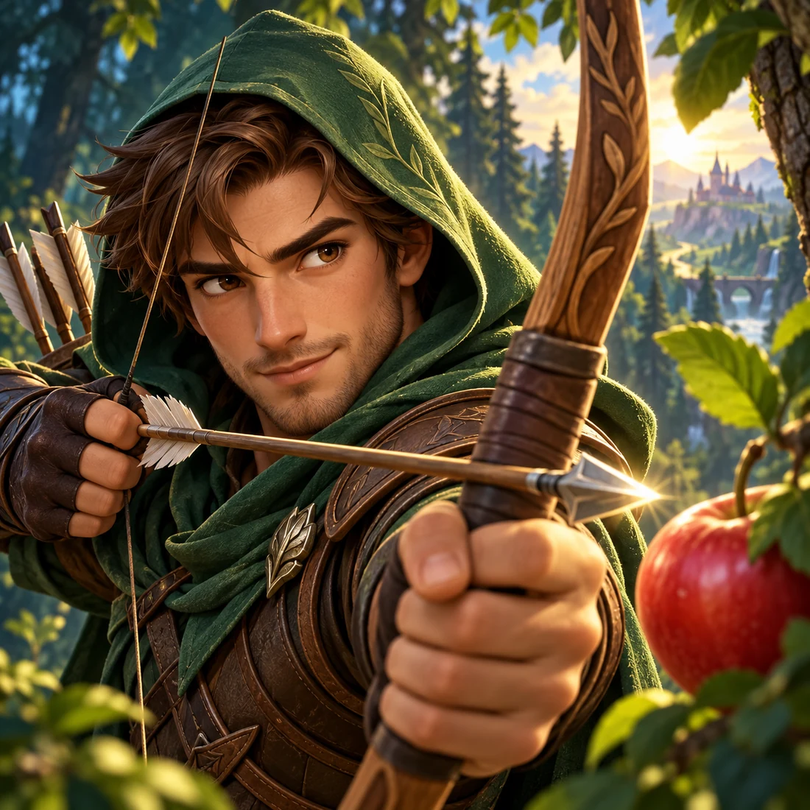

Google Play’deBağımsız fikirler. Oynanabilir dünyalar.
KÜÇÜK EKRAN.
BÜYÜK MERAK.
Bir ışığın peşinden gitmek. Bir zinciri tamamlamak. Bir kez daha denemek. Red Blood’da küçük anlardan oyun dünyaları doğuyor.
6 oyun · Farklı dünyalarUnity ile üretildi



↗ Bir fikirden, bir sonraki seviyeye.
Bağımsız oyun geliştirme✳Küçük fikirler yeni keşifler✳Android için tasarlandı
Oyun koleksiyonu / 01
Sıradaki küçük takıntın.

Google Play’deChain
Küçük sayıları birleştir. Her zincirde yeni bir yol keşfet.

Google Play’de

Google Play’de
Pipshot
Savunmanı kur, atışını yap ve yeni dalgalara hazırlan.
6 oyun gösteriliyor. Project Rune, Discverse, Light Paths ve FOLD Google Play’de. Diğer oyunların erişim bilgileri için bize yazabilirsin.
Geliştirici günlüğü / 02
Oyunun dışında, üretimin içinde.
Bir fikir, bir hata, bir merhaba.
Oyunlar, test erişimi veya iş birliği için yazabilirsin.